Jing-Zhang Commute Commons: An Enterprise–Resident Activity-Chain Network
An activity-chain model links employer staggering, resident care, external commuting, metro, bus, bicycle, walking/accessibility, cars and enterprise shuttles; a population-scale synthetic screen compares arrival reliability, transfer waiting, curb conflict and group equity, while future air mobility remains a conditional, reversible, ground-first experiment.
Jing-Zhang Commute Commons: An Enterprise–Resident Activity-Chain Network
The next move for the Jing-Zhang corridor is to place enterprise arrival and loading, resident school, care and return trips, rail transfers, curb parking and maintenance complaints in one replayable mobility operating system. Every AI optimisation must first check that the slowest person has not been pushed further back.
This is a new independent submission package. It does not modify the existing first-place project or the earlier Commute Commons package. The proposal consists of one activity-chain ledger, two aggregated demand registers, six ground modes, four service levels and five verification gates. Enterprise data is submitted as grouped time windows, not personal traces. Resident needs cover school, care, health, daily shopping, night return and accessibility. Metro and bus remain the structural backbone; bicycle and walking/accessibility provide the first/last mile; cars are managed for necessary trips, parking, loading, charging, drop-off and emergency access; shared shuttles and AI recommendations are reversible feeder services. External commuting is kept in the grouped OD boundary, and future air mobility is only a conditional experiment. All geometry remains provisional until official boundaries, right-of-way, traffic counts, ownership and field audits are available.
What This Revision Adds: One Full-Day Activity Chain in One Ledger
Most mobility diagrams answer which mode is faster. They do not show what happens when one person drops off a child, reaches work, completes a service task and still has to get home. This package replays six activity nodes—departure, feeder access, work or school arrival, midday service, return and home arrival—for enterprise employees, resident workers, carers/children, visitors/service users, logistics/maintenance workers and night workers. Each synthetic agent retains only a group, mode, time band, activity node, service edge and aggregate output. It does not create a personal trace or speak for a resident or employee.
The new runner loops through 3,122,000 declared synthetic agents, compares four ground policy bundles and one hard-blocked air candidate, and changes employer shift eligibility, mode weights, transfer reliability, curb conflict and human fallback conditions together. Candidates must first pass mass conservation, complete processing, capacity, minimum-group accessibility and air-block gates. They are then ordered by all-day generalized cost, P90 arrival time, group equity gap and vehicle-kilometre proxy. The model borrows the boundary discipline of activity-chain, mode-choice and reliability research without importing paper coefficients 来源 来源 来源.
Capacity constraints are returned as explicit candidate gates: continuation depends on capacity, fallback and equity conditions rather than a single composite score 来源. This is a finite candidate search, not a field-calibrated global optimum; authorized OD, timetables, capacities, accessibility audits and resident/enterprise input must replace the assumptions before the chain is rerun 空间数据 空间数据.
Under the current synthetic inputs, the selected candidate combines employer staggering, rail/bus feeders, accessibility protection and curb reservations, with a composite mobility-pressure proxy score of 91.88. This is a synthetic screen output, not resident satisfaction or field performance. It does not gain enterprise efficiency by pushing resident or care schedules later. Only a declared share of enterprise employees may use an early window; other groups retain their original windows and human/public-transport fallback. Employer travel-demand-management research is used only to remind the screen to test worksite, flexible-time, transit and shuttle conditions; its external effect sizes are not transferred to Haidian 来源. Even if an air candidate has a faster time proxy, it remains blocked because airspace, airworthiness, insurance, noise, fire, weather, emergency, public-participation and ground-access evidence is missing 空间数据 来源.
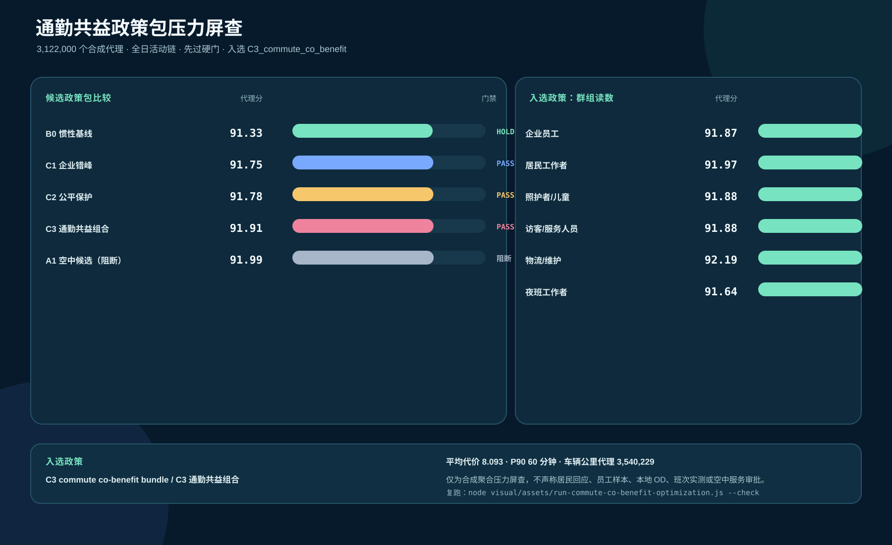
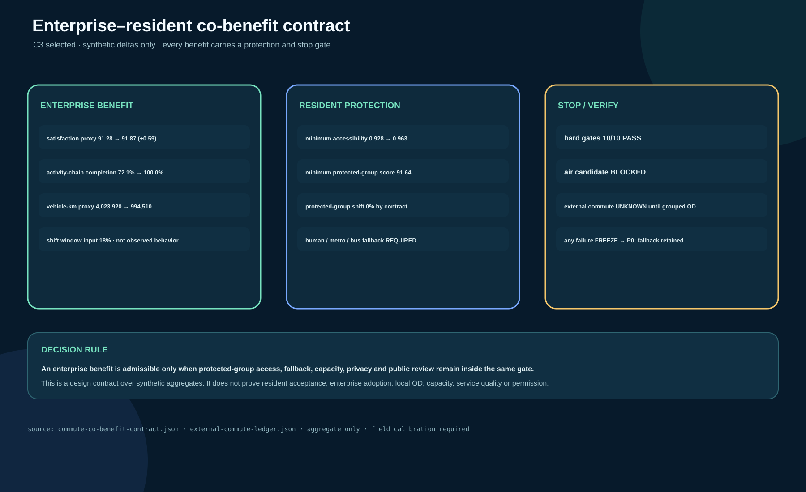
This contract puts “what the enterprise receives” beside “who cannot be sacrificed”: only the declared employer shift input may move, while resident, care, night-work, logistics and public fallback protections remain gated. External commuting stays unknown until dated grouped OD evidence exists; any failed gate freezes the policy and returns it to P0 空间数据 空间数据.
The contract also needs an evidence ladder so that a synthetic score cannot be mistaken for permission to open a service. P0 registers grouped OD, headways and capacity, resident care and accessibility validation, complaint and fallback rehearsal, and privacy rules. P1 tests one reversible minimum chain. P2 discusses wider time windows and service scope only after the evidence closes. The current package stays at P0; expired evidence, protected-group decline or missing ownership returns it to P0 or stops it. The air candidate is a separate blocked item and cannot fill a ground-evidence gap 空间数据 空间数据.
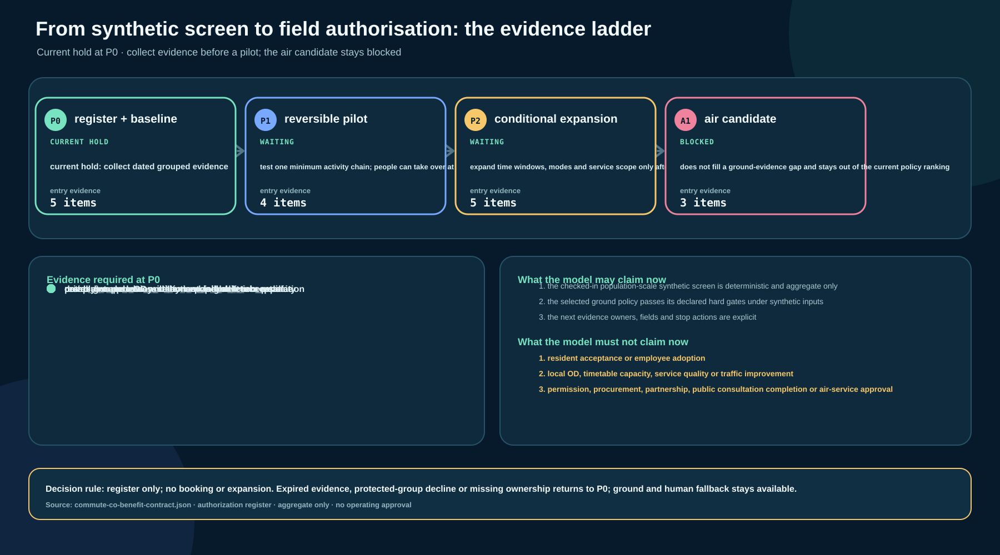
To show where the proxy score comes from, the model now holds the C3 ground modes, curb, reliability and accessibility controls fixed while sweeping the declared employer shift input from 0% to 24%. Under these declared inputs, the enterprise readout changes slightly, the minimum protected-group access and satisfaction stay unchanged, and the overall proxy moves only within a narrow range. The current 18% is a declared C3 input, not accepted employer participation and not a real-world optimal stagger rate. Employer acceptance, timetable capacity, resident response and field satisfaction still need dated evidence 空间数据 空间数据.
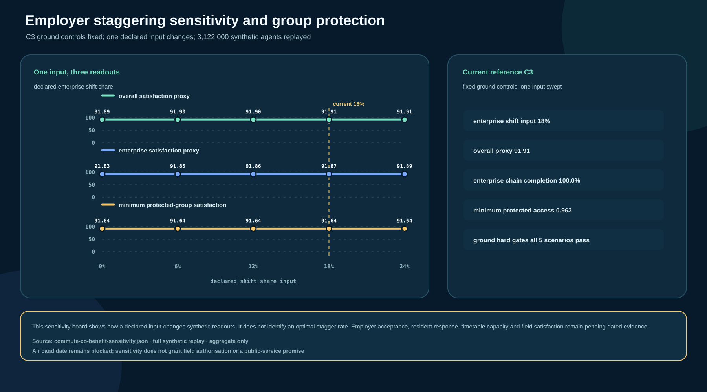
Time Budgets and Group Sufficiency: Check Who Can Arrive on Time Before the Average
A composite proxy score compresses many differences into one number. To keep those differences visible, the same synthetic agents are read again at 30, 40, 50, 60 and 75 minute budgets. Each curve shows the share of a group completing the declared synthetic trip within the time limit. The right panel places the C3 and B0 all-agent readouts together and keeps the minimum among resident workers, carers/children and night workers visible 空间数据.
This iteration writes the protected-group control into the model. C3 uses 50 minutes as the protected review point for carers/children and night workers, while 40 minutes remains a short-budget diagnostic. Carers/children keep 39% walking/accessible weight and 38% metro weight. Night workers keep a declared metro, bus, walking and necessary car fallback mix. This is a synthetic stress-screen profile. Field use still requires dated lift and accessible-route audits, night-service coverage and a human return-home roster 空间数据.
The board uses exact times from the committed runner. It does not import a paper threshold, an external sample or a local timetable. It helps a reviewer see whether a policy can lead on average generalized cost while making one group less likely to meet a 40 or 50 minute limit. These curves are synthetic sufficiency proxies, not local accessibility, and they cannot replace time-binned OD, reliable timetables, walking and accessibility audits, resident response or a local baseline. The time budgets are not claimed as real-world optima; an authorised organisation and professional team must freeze any field threshold from dated evidence 来源 来源 空间数据.
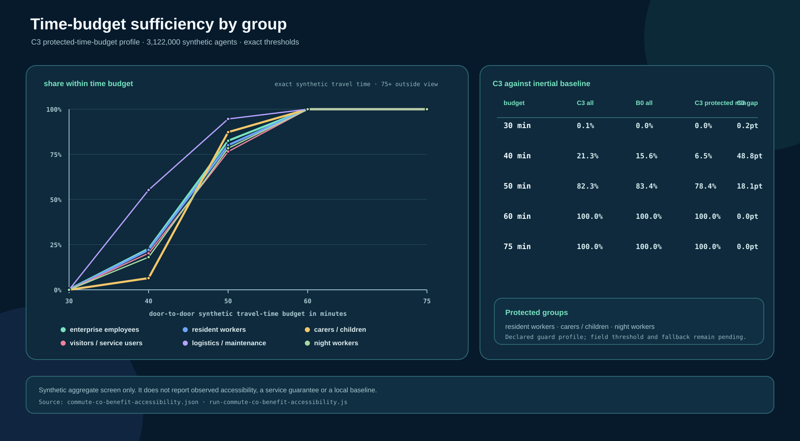
One-Page Executive Brief: Accept One Door-to-Door Chain Before Expanding Shared Feeders
An ordinary person is not a flow point in a model. At each step—leaving, transferring, encountering disruption, asking for help and returning home—they need an understandable choice. The first reversible pilot accepts one minimum chain: choose a public/accessibility or human route → request one mobility service → trigger human or rail/bus takeover when a transfer is missed, the network is offline, weather turns bad or a curb conflict occurs → freeze the booking and exit when the state is unsafe or unreachable → let an independent reviewer replay the evidence and decide whether to repair, expand or withdraw. This is not an operational claim. The current M-09 is only a local, offline, no-personal-data tabletop replay of four synthetic requests; performance_results=null and operational_status=not_authorized_not_run.
To make the tabletop replay a readable spatial acceptance entry point, the four request types each connect to a trigger and a human/public-transport fallback; the brief checks only reservation freeze, fallback retention, gap recording and no P1/P2 advancement. The exact requests, triggers and 6/6 checks remain in the package fixture; performance_results=null, so a synthetic PASS is not field performance 空间数据 空间数据.
| Step | Space/service visible to an ordinary person | Evidence retained | Fail-closed action |
|---|---|---|---|
| 1. Choose | Station wayfinding, continuous walking/wheelchair route, human/phone/paper entry and shared-feeder candidate shown together | Choice, service window, accessibility-need category and version; no continuous personal trace | Keep an equivalent human route when digital access fails; do not open without one |
| 2. Request | Rail/bus transfer, shuttle/minibus candidate, curb loading or community service desk | Request ID, grouped service type, start/end window, responsible role and alternative route | Register only, without booking, when ownership, responsibility, capacity or consent boundaries are unknown |
| 3. Take over | After a missed transfer, outage, rain/snow, accessibility obstruction or curb conflict, a person points to rail/bus or a human route | Trigger, takeover person, handoff time, clearing action and complaint entry | Freeze automated booking and prefer human/public transport; stop if nobody can take over |
| 4. Exit | Signage, human desk and paper/phone complaint route allow rerouting, getting home or cancelling | Cancellation reason, alternative route, unresolved item and not_authorized_not_run state | Do not expand or report success when fire, accessibility, privacy or safety gates fail |
| 5. Replay | An independent reviewer replays one door-to-door chain and compares continue, repair or withdraw | Minimal log, grouped result, complaint-closure evidence, version and review decision | Return to P0 investigation and human service when evidence is missing or the slowest group worsens |
This table connects the design boards, curb ledger, M-09 fallback tabletop and P0/P1/P2 phasing to one acceptance entry point. PASS for four synthetic requests proves only that the state machine and rollback logic can be replayed; it does not prove real demand, accessibility performance, staffing, public acceptance or safety.
Why This Is a Jing-Zhang Public-Space Proposal: History, Industry and Daily Mobility on One Line
“Centennial Jing-Zhang” is not a decorative poster in this proposal. It is a public-memory response to arrival, transfer, waiting, maintenance and getting home. The heritage park, station entrances, enterprise front doors and community service desks share wayfinding, shelter, seating, accessible routes and human service, so a person can understand the route before choosing any smart service 来源.
| Task requirement | Spatial answer visible in the proposal | Boundary kept explicit |
|---|---|---|
| Centennial Jing-Zhang and urban culture | Make heritage, park, station and transfer waiting one walkable, pauseable and explainable public chain | No invented conservation conclusion, historic alignment control or approved cultural project |
| AI innovation belt and regional collaboration | Give Zhongzhiyuan, the AI Origin Community and Dazhongsi enterprise arrival, resident daily access and rail transfer roles in one time-window ledger | Without named institutions, agreements or resident samples, this is not an alliance or partnership claim |
| Planning innovation | Draw curb states, continuous walking, station capacity, fire clearance and human fallback as a closable spatial service layer; automation remains a constrained feeder | No new road redline, parking supply, social-road permit or building-intensity commitment |
| Perceptible AI+ scenarios | At the station, service desk, waiting area and curb board, an ordinary person can see choices, owner, stop condition and redress | Model stress screens do not replace field counts, accessibility review or public experience |
| Long-term operation and communication | Bilingual boards, public aggregate ledgers, asset IDs, complaint closure and P0/P1/P2 review make the proposal updateable | Bilingual display is not an international event, government endorsement or operating result |
This table returns the mobility operating system to five visible urban-design interfaces: station entrance, public space, building ground floor, curb and maintenance point. The three key-area massing and ground-floor choices appear below; spatial relationships remain tied to provisional layers, while implementation dependencies and rollback roles await professional and authorised review 深度 空间数据.
What Different People Need First: From Leaving Home to Getting Home
The same network creates different problems for different people. The four entry points below cover residents, enterprise employees, carers and accessibility users, and cross-boundary commuters. They are scenario entry points; they do not become validated demand before field work.
| Group | Immediate problem | First choice offered | Evidence before validation |
|---|---|---|---|
| Residents | School, health, shopping and night-return chains break at transfers | Rail and bus connections, continuous walking and wheelchair routes, human and phone access | Dated time-slice mode counts, accessibility walkthrough and complaint owner |
| Enterprise employees | Arrival windows, shuttles, parking and loading compete for the same curb | Consolidated-shuttle candidate, curb booking, public transport and guaranteed-ride-home fallback | Grouped employer demand, headway and right-of-way evidence, accountable role |
| Carers and wheelchair users | Care chains cannot wait and continuous routes cannot be cut by parking or loading | Accessibility-priority curb, human guidance, public transport and care-service fallback | Continuous-route audit, assisted-trip record and worst-group readout |
| Cross-boundary commuters | Park-and-ride, rail-bus transfer and arrival time remain unstable | Grouped cross-boundary OD, transfer chain, park-and-ride and departure-window choice | Privacy-preserving OD, station capacity and external-operator coordination record |
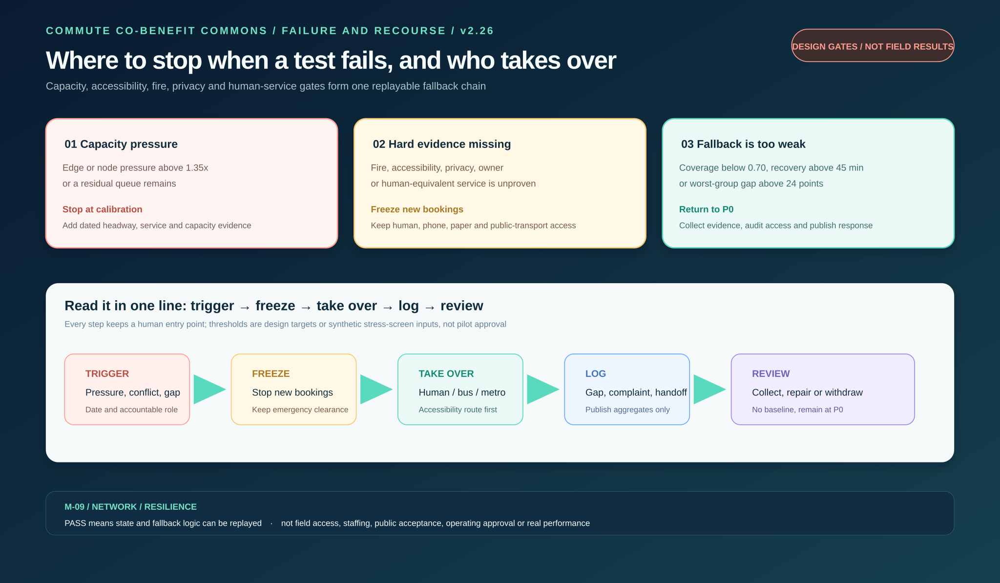
This board answers what happens when a test fails. Its thresholds are design gates or synthetic stress-screen inputs; they are not observed Haidian operating results 空间数据 空间数据 空间数据.
Reviewer Guide: Where to Start Across the Seven Dimensions
This is a reviewer navigation aid, not a formal scorecard. Each row gives the shortest reading entry, the strongest evidence surface and the boundary that must remain explicit. The structured counterpart is visual/assets/review-evidence-index.json.
| Rubric dimension | Shortest entry | Primary reader | What to inspect first | What it still cannot prove | | --- | --- | --- | --- | | Brief alignment | Three-level scope, compliance_matrix.json | Planning and governance review | Three research scales, three key areas and AI+mobility task coverage | Provisional geometry is not a statutory redline | | Originality | One-page brief, responsibility–acceptance contract | Design review | Time-windowed curb ledger, enterprise–resident commons and reversible human fallback | Roles are not signed contracts or partnerships | | AI/planning innovation | Network-flow and capacity-closure runners | Data and technical review | Population-scale aggregate flow, capacity closure and air-candidate hard block | Synthetic pressure, satisfaction and capacity are not local performance | | Implementation feasibility | responsibility-acceptance-contract.json, M-09 contract | Operations and implementation review | P0/P1/P2 roles, fields, thresholds, stop and rollback paths | Operators, budget, procurement, permits and headways still need dated evidence | | Public interest/inclusion | One-page brief, M-09 evidence, service-levels.json | Residents, enterprises and accessibility review | Accessibility, care and night groups, non-digital access, public-route continuity and redress | No resident sample, consent record or field accessibility performance exists yet | | Risk/compliance | Network-flow, assumptions.json, sources.json | Compliance and safety review | Air fail-closed, data minimisation, provisional and not-authorized boundaries | Policy and papers do not replace professional, insurance or permit review | | Expression completeness | Bilingual proposals, offline HTML, visual, manifest | All readers | Human layer, boards, JSON audit layer, drawings and hash consistency as one package | The index is not an official score, CI result or implementation approval |
The table reduces reviewer search across long evidence and repeated boundary statements without adding a new fact, metric or implementation promise 空间数据.
How the six taskbook tasks land in this package
The six taskbook tasks remain belt-wide work. This mobility package is responsible only for the part it can actually deliver. The table puts the mobility contribution first and leaves unsupported work to the organiser, planners, cultural researchers, and future operators. The full machine-readable crosswalk is visual/assets/taskbook-crosswalk.json; the bilingual board is assets/figures/taskbook-crosswalk-board.en.svg.
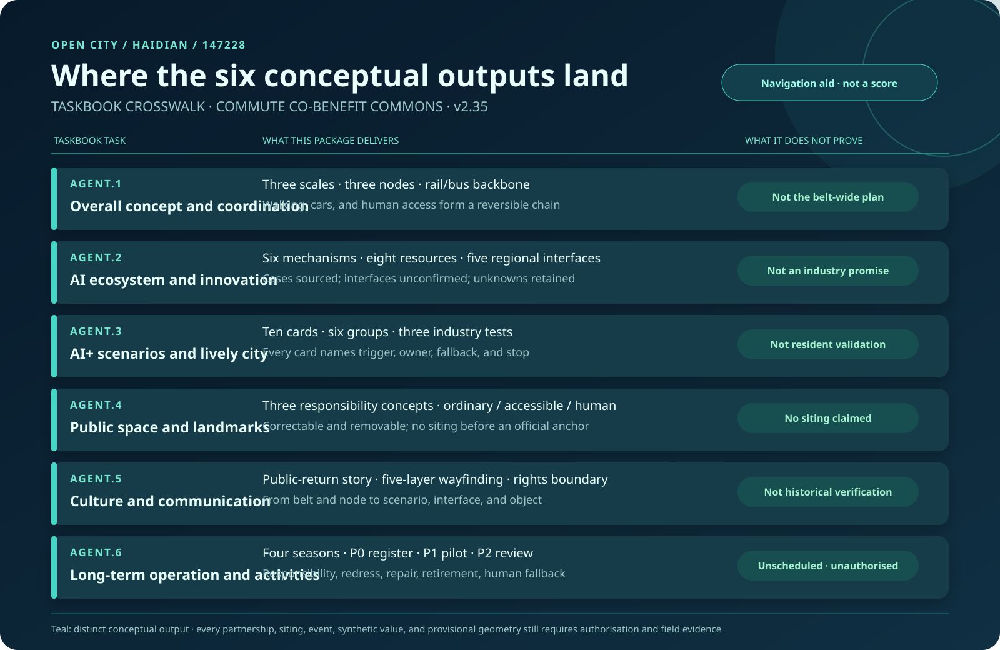
| Task | Package deliverable | Read first | Not claimed |
|---|---|---|---|
| agent.1 overall coordination | Three scales, three nodes, rail/bus backbone, and a reversible mobility chain | mobility-spatial-plan.svg, overall-structure section | Belt-wide master brand, statutory redlines, regulatory metrics, engineering conclusions |
| agent.2 AI ecosystem | Mobility-side ledgers for enterprise, residents, external commuters, vehicles, nodes, curbs, and maintenance | demand-ledger.json, resource-pressure-readout.json | Industrial attraction, funding, enterprise lists, confirmed partnerships |
| agent.3 AI+ scenarios | Ten bilingual scenario cards, six participant groups, three industry tests, and card-level stop rules | scenario-cards-board.svg, startup checks, people-flow section | Resident surveys, observed OD, field operation, public acceptance |
| agent.4 public space | Mobility interfaces at entrances, waiting areas, ramps, bicycle parking, curb desks, and maintenance points | brand-system-board.svg, key-area and blue-green sections | Three landmarks, heritage approval, bridge/tunnel engineering, official events |
| agent.5 cultural narrative | A bilingual public-service narrative of arrival, transfer, waiting, maintenance, and home | Commute Commons public-space section and bilingual boards | Belt-wide cultural system, historical verification, unauthorised copyrighted material |
| agent.6 long-term operation | P0 registration, P1 pilot, P2 review, redress, retention, stop rules, and human fallback | Responsibility contract and M-09 readiness evidence | Annual events, developer community, attraction/conversion, operating contracts |
This table lets a reader find evidence quickly and see the gaps just as quickly. The 3,122,000 synthetic agents, tabletop replay, and package self-checks show only that the model and state logic can be replayed. They do not establish resident needs, field capacity, public consent, approval, or rank. All spatial layers remain provisional constraints, and air mobility stays blocked when evidence or approval is insufficient 空间数据.
Reading Labels and Evidence Boundaries
The package uses four labels for numbers. Read the label before reading the value.
| Label | Meaning | What it can show here | What remains pending |
|---|---|---|---|
| ▲ Synthetic proxy | A runner output under declared inputs | A replayable comparison or pressure point | Field OD, headways, capacity, experience and survey evidence |
| ◇ Design gate | A proposed stop or acceptance condition | When a pilot must stop or fall back | Professional review, accountable operators and dated baselines |
| ★ Known in package | A value readable from a package file | Internal consistency across files | It does not automatically become a Haidian baseline |
| ? Pending official data | A field that cannot be filled responsibly yet | The next evidence collection target | Public, authorized or field evidence |
“Composite mobility-pressure proxy score” is the readable name for the model field satisfaction_proxy. It combines time, reliability, accessibility and conflict on one comparison scale. Resident satisfaction, public acceptance and field performance remain pending formal evidence. The claim audit checks that headline numbers carry this wording and point to the same runner in both languages 空间数据.
Design Basis and Source List
The open-call requirements cover three spatial scales, three key areas, AI and mobility scenarios, an innovation ecosystem and reviewable drawings and data layers 来源 来源. The package uses the public provisional site package but replaces the narrative, road attributes, metrics, evidence register and visual boards with an enterprise–resident mobility focus. Both the site and key-area polygons declare official_boundary=false and geometry_role=provisional_constraint 空间数据 空间数据.
Beijing’s 14th Five-Year transport plan frames one-hour door-to-door trips, integrated rail/bus/walking/cycling, public-transport priority and smart transport as policy directions 来源. A current Haidian road-parking service tender combines order management, guidance, patrol, equipment inspection, exception handling, backend operations and complaint response. It demonstrates that a curb is an operated asset, not merely a line on a map 来源. A Haidian transport planning document requires transit-hub conditions, ground-floor public interfaces, bicycle interchange, emergency routes and traffic-impact review 来源. None of these sources is a local baseline for this provisional study area.
Evidence is separated into known geometry values, unknown local baselines, design_target pilot gates and blocked conditions. Employer travel-demand-management research supports transit benefits, multimodal subsidies, flexible hours and guaranteed rides home, but its effects are context-dependent and are not copied as Haidian outcomes 来源 来源.
Site and Stakeholder Evidence Status: Mark the Unknowns Before the Pilot
This package does not claim that its author has visited the site, interviewed residents, consulted enterprises or transit operators, or completed an accessibility walkthrough. visual/assets/site-and-stakeholder-evidence.json makes the boundary reviewable: the package currently uses public policy, tender, method and open-map context only; it has no authorised resident or enterprise aggregate register, personal data or stakeholder endorsement. Resident school, care, health, shopping and night-return needs, enterprise arrival, shuttle, loading and charging needs, accessible-route continuity and external commuting are scenario assumptions awaiting validation, not validated demand 空间数据 空间数据.
Affected groups include residents, enterprise employees, carers and children, wheelchair users, night workers, visitors, logistics and maintenance staff, metro and bus operators, accessibility and safety reviewers, and emergency responders. Three questions remain open: could enterprise priority displace resident, accessible or emergency access; can grouped demand be collected with consent, minimisation, retention and deletion controls; and does a disruption fallback actually preserve care and accessible routes? They are registered as open questions, not replaced by model readouts 空间数据.
P0 therefore starts with authorised dated grouped OD and mode counts, a professional accessibility and people-flow walkthrough, and a public comment-response ledger. Not visiting the site does not block a concept submission, but until those records exist the package makes no claim of resident validation, site knowledge, stakeholder support, operating performance or P1/P2 authorisation. It does not upload private interview transcripts or contact details.
Three-Level Scope Framework
The regional layer studies the rail, bus, campus, enterprise and residential relationships around the Jing-Zhang corridor. The overall layer translates them into access chains, curb states, public-service interfaces, blue-green fallback and maintenance packages. The key-area layer tests one reversible operational package in each of Zhongzhiyuan, the AI Origin Community and Dazhongsi 深度 标准.
The three scales share the same provisional site_boundary, key_areas, land_use, buildings, roads, green_space, public_space, constraints and phasing layers. The approximately 11.41 km² area is a design-comparison value only 空间数据 指标. A future official revision must trigger one coordinated re-render of all geometry, metrics, drawings and visual cards.
Coordinated Research Area: Industry and Future City Research
Enterprise side
Enterprise mobility desks submit grouped demand windows: approximate employee bands, entrances, shuttle periods, freight and loading windows, visitor peaks, night work and emergency needs. The system compares public transport, consolidated shuttles, cycling, walking and shared feeder options. It does not retain individual trajectories. Enterprises receive a service window rather than permanent public right-of-way, and they share responsibility for on-site guidance, cleaning, maintenance and complaint closure.
Resident side
Resident input records service types and time bands for school, care, health, shopping, night return and accessible travel. It does not require a continuous home-to-work trace. Offline, telephone, paper and human-service routes remain equivalent options. Results must be stratified by age, mobility, care load, night travel and enterprise affiliation; a single average satisfaction score cannot establish equity 来源 来源.
Managed future mobility
Autonomous or on-demand shuttles are treated as regulated feeders, not replacements for rail or unlimited vehicle supply. Research finds that shared autonomous vehicles can complement or compete with transit and may increase vehicle kilometres if supply is unmanaged 来源 来源. Every feeder therefore needs capacity, a time window, a responsible operator, an accessible human fallback and a stop condition.
Overall Design Area: Urban Renewal and Regulatory-Plan-Level Urban Design
Overall structure: one commons loop, three connection types and four service levels
The overall structure is a shared mobility loop, not a new closed road. Three connection types are used: stable rail/bus interchange, consolidated enterprise/shared feeder services, and human-first accessible walking. Four service levels are measured: route continuity, transfer reliability, orderly curb use and complaint closure. Curb-management research supports treating delivery, ride-hail, shared mobility and public events as competing demands that require joint public/private scheduling and responsibility 来源.
Five ground modes and one conditional air experiment
The loop is layered instead of flattening every trip into one line: metro/rail carries the long-distance backbone and external commuting; bus adds coverage, night service and transfer resilience; bicycle handles station-to-campus and station-to-community access; walking and wheelchair access are the public base for every mode; and cars are managed for necessary trips, parking, loading, charging, drop-off and emergency access. Enterprise shuttles, on-demand minibuses and shared feeders must connect to rail/bus rather than add unmanaged vehicle supply 来源.
Future air mobility is represented only as an air-mobility-candidate relationship node. Without written review of airspace, routes, airworthiness, operator, insurance, weather, fire, noise, emergency response and public participation, the package draws no operating route, promises no vertiport and claims no permit. If an experiment becomes eligible, it starts with ground transfer, accessible evacuation, human supervision, low frequency, reversibility and weather cancellation 来源 来源.
Spatial update: reversible first, then fixed infrastructure
The first intervention is reversible: signs, wayfinding, rain shelters, seats, bicycle parking, accessible ramps, enterprise mobility desks, human service counters and time-window curb markers. Fixed construction is not proposed before the geometry, right-of-way, safety and maintenance evidence is complete.
People are the center of the simulation: enterprise employees, residents, carers, children, wheelchair users, visitors, logistics/maintenance staff, night workers and emergency responders receive separate grouped OD and time windows. No continuous personal trace is required. External commuting crosses the provisional boundary and must be recorded in P0 by origin/destination direction, metro, bus, bicycle, car, walking and shuttle mode, park-and-ride and cross-line transfer. It feeds external_commute_od_baseline and external_commute_generalized_cost_index as survey products, not guessed facts.
Scenarios include weekday AM/PM peaks, off-peak, event days, rain/heat, metro or bus outage, road/parking failure, and future-air comparisons with ground-only transfer and weather cancellation. Metro/bus inputs include schedules, station capacity, waiting and transfer buffers; bicycle inputs include parking, sharing and conflicts; car inputs include intersection queues, parking, loading, charging and emergency clearance; walking/wheelchair inputs include section width, crossings, gradients, care stops and accessible detours. SUMO is an open base for multimodal simulation, but local signals, station capacities, bicycle behaviour and pedestrian flows must be calibrated with field counts; software output is not a Haidian performance claim 来源 来源.
Optimization is hard-gate first and Pareto-based afterward. Safety, fire/emergency access, accessibility continuity, public-transport protection, privacy and human service are screened before comparing generalized cost, people-flow conflicts, car vehicle-kilometres, energy, external-commute reliability and worst-group gaps. The result is an explainable candidate set and an unknown multimodal_system_efficiency_index, not an uncalibrated claim that one score is “the highest overall efficiency” 指标 指标.
The package does not claim a new bridge, road widening, parking supply, building height, floor-area ratio or investment amount. All land-use and building relationships remain conceptual and are tied to the machine layers 空间数据 空间数据 深度 深度.
Detailed Design of Key Areas
Zhongzhiyuan tests enterprise arrival, shuttle consolidation and loading. The AI Origin Community tests daily resident access, care and a genuinely equivalent human route. Dazhongsi tests rail transfer, bicycle parking, loading and event-day public-space management. Each area has an accountable enterprise or community operator, a transport reviewer and a maintenance owner; no partner, permit or existing operation is claimed 指标 深度 来源.
The first pilot is a small morning and evening window in Zhongzhiyuan, an accessible daily-route comparison in the Origin Community, and a rail/curb separation rehearsal at Dazhongsi. Enterprise bookings cannot become permanent community bans. Shared vehicles cannot occupy a fire route, accessible path or emergency corridor.
Public Interfaces and Reversible Service Relations for the Three Key Areas
Mobility operations do not replace urban design. The following ledger translates each area’s mobility role into a provisional public interface and reversible-service relation; it does not change the geometry or present a regulatory-plan control. The announcement-scale areas are approximately 192.1, 104.3 and 72.0 ha for task scale only; they are not existing building area, parcel boundaries or regulatory-plan indicators 空间数据 来源.
| Key area | Spatial relationship | Public interface and reversible relation | Upper-height evidence | First professional evidence to collect |
|---|---|---|---|---|
| Zhongzhiyuan AI Autonomous Innovation Acceleration Zone | Separate enterprise arrival, shuttle waiting, loading and fire-clearance layers; keep the ground interface service-oriented | Human desk and public observation remain adjacent; equipment, maintenance and test back-of-house can close; the walking spine stays open | Formal evidence pending | Existing buildings, energy/fire review, ownership, enterprise OD and curb survey |
| Beijing AI Origin Community | Place community services, continuous walking/accessibility, weather shelter and daily needs on one human-first interface | Staffed desk, paper entry and intergenerational learning face the ordinary route; test components remain removable and pausable | Formal evidence pending | Accessibility walk, resident-service baseline, ownership, care and night-safety evidence |
| Dazhongsi AI Industry Cluster | Distinguish rail transfer, bicycle parking, public ground-floor frontage and timed loading | Rail arrival, quiet route and service front are separated; events and data display can withdraw without taking the everyday route | Formal evidence pending | Station flow, curb counts, traffic organisation, fire and municipal interfaces |
These relations compare how ordinary paths, human service, equipment back-of-house and upper functions are separated; they do not define development intensity, massing, demolition or engineering capacity. A formal scheme must recalculate them after survey, regulatory-plan review, ownership, fire, structural, municipal and public-participation evidence is complete 深度 深度.
Until that evidence exists, the first spatial moves remain removable signs, weather shelters, bicycle parking, accessible ramps and curb-state boards. No road widening, building increment or demolition conclusion follows from this ledger 标准.
AI Innovation Ecosystem, Personas, and AI+ Scenarios
Commute Commons identity and three public experience nodes
The working name is “Commute Commons Loop”. Its mark places enterprise, resident and rail entrances around an open loop that keeps a human exit. It is a proposed identity, not an approved official logo or event brand. Three public experience nodes sit at the enterprise mobility desk in Zhongzhiyuan, the human access desk in AI Origin community, and the rail transfer gallery at Dazhongsi. Together they form a future learning route: observe enterprise needs, use the resident entry, and review rail and curb conditions. “AI pilgrimage” here means public learning and review, not a built attraction, tourism result or scheduled event.
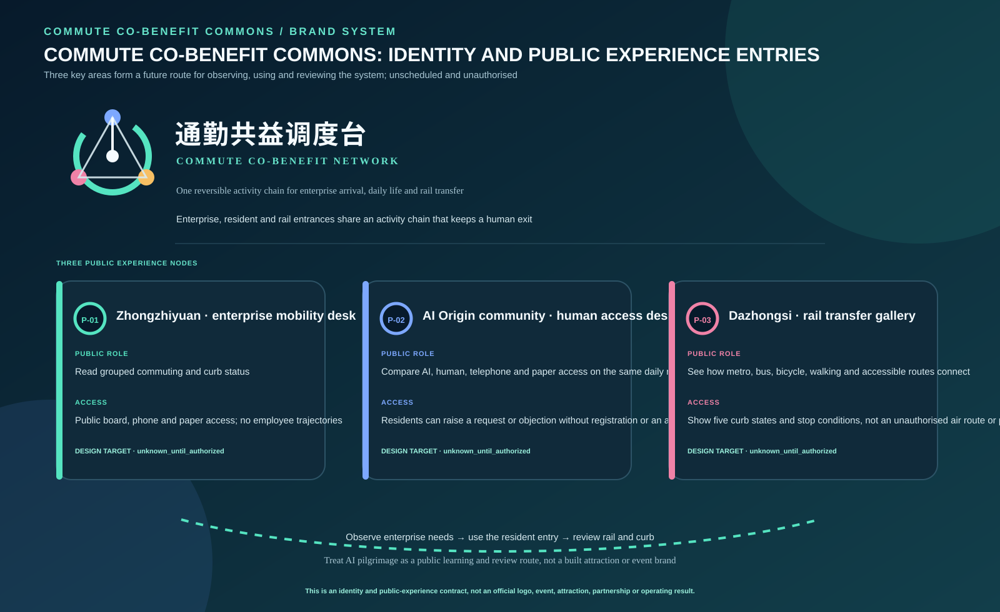
Each node keeps public-board, telephone and paper access, shows no personal trajectories, reserves no air route and does not turn model outputs into exhibition conclusions. Responsibility, venue, activity and operating state remain unknown_until_authorized or not_scheduled_not_authorized 空间数据.
Six participants and three industry tests
Personas include enterprise mobility coordinators, residents and carers, wheelchair users, rail and bus operators, logistics and maintenance staff, school and community workers, night-shift staff and transport/privacy/fire professionals. AI aggregates demand, explains conflicts and prepares rollback checklists; it cannot permanently lock a public route. Accessibility and shared-feeder research informs the test boundaries, not a local outcome or permit 来源 来源.
Three industry tests structure the pilot: enterprise demand aggregation using grouped data; an equal-service comparison between AI, human, telephone and paper routes; and curb/communication-loss fallback during peak, event, snow or rain scenarios. Ten scenario cards cover consolidated enterprise shuttles, public-transport benefits, guaranteed night return, loading reservations, accessible daily routes, the last 500 metres to rail, event-day separation, degraded service and complaint-to-maintenance closure 来源 标准.
Ten scenario cards
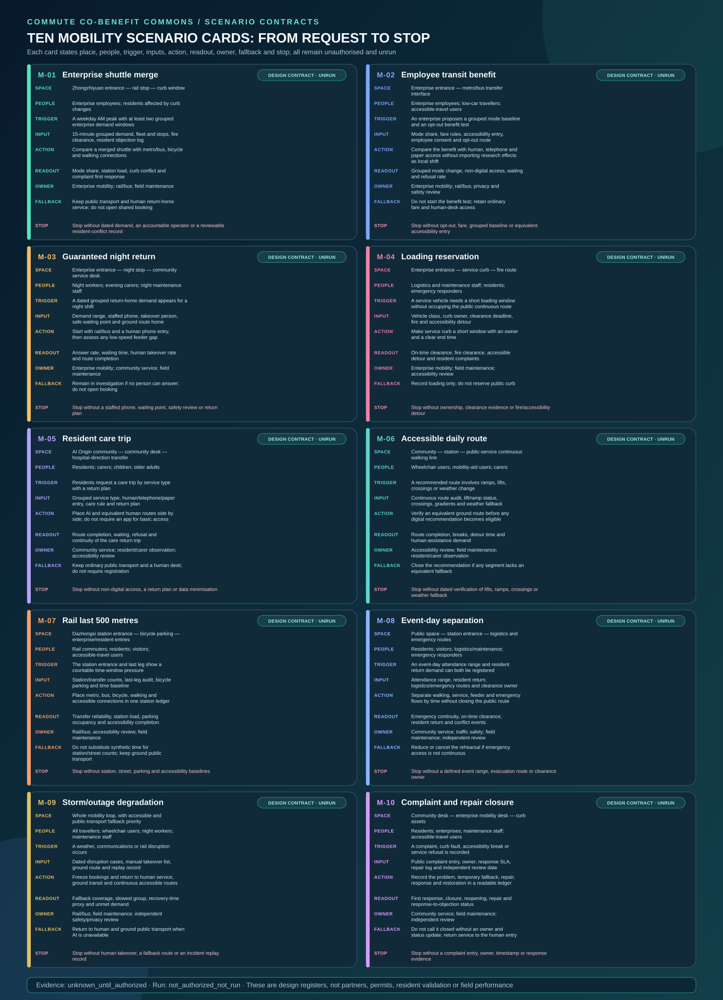
The ten cards are also registered in visual/assets/scenario-cards.json. Each card now states its place, affected people, trigger, evidence inputs, service action, readout, accountable design role, human fallback and stop condition. Their shared status remains unknown_until_authorized and not_authorized_not_run. The board helps a reader see who encounters what problem where; it is not evidence of a partner, permit, resident validation or field performance.
When Can a Pilot Start? Run the Ten Scenario Gates
“Reversible pilot” is not a date written into a concept document. Each scenario must first pass the shared P0 evidence gate and then its own start checklist. Until accountable roles, dated evidence and an independent stop reviewer exist together, the scenario remains a demand record rather than a booking or expansion. All ten cards remain not_authorized_not_run; no partner, timetable, budget or field effect is invented.
| Scenario | Check before start | Accountable roles | If one item is missing |
|---|---|---|---|
| M-01 Shuttle merge | Grouped enterprise demand, fleet and stop, curb/fire clearance, resident conflict response | Enterprise mobility, rail/bus, field maintenance | Keep public transport and human return-home service; do not open shared booking |
| M-02 Transit benefit | Grouped mode baseline, benefit rule, fare/accessibility entry, employee opt-out | Enterprise mobility, rail/bus, privacy/safety review | Do not turn research effects into a local shift; remain in investigation |
| M-03 Night return | Night demand, staffed phone, takeover person, safe waiting point and route | Enterprise mobility, community service, field maintenance | Stop at investigation if no person can answer |
| M-04 Loading reservation | Vehicle class, curb owner, clearance deadline, fire and accessibility detour | Enterprise mobility, field maintenance, accessibility review | Record loading only; do not reserve public curb |
| M-05 Resident care trip | Grouped service type, human/telephone/paper access, care rule and return plan | Community service, resident/carer observation, accessibility review | Keep ordinary public transport and a human desk; do not require registration |
| M-06 Accessible route | Continuous route audit, lift/ramp status, crossings and weather fallback | Accessibility review, field maintenance, resident/carer observation | Do not open a recommendation without an equivalent route |
| M-07 Rail last 500 m | Station and transfer counts, last-leg audit, bicycle parking and time baseline | Rail/bus, accessibility, field maintenance | Do not substitute synthetic time for station and street counts |
| M-08 Event separation | Attendance range, resident return, logistics and emergency routes, clearance owner | Community service, safety, field maintenance, independent review | Reduce or cancel the rehearsal if emergency access is not continuous |
| M-09 Storm/outage fallback | Dated disruption cases, manual takeover list, ground route and replay record | Rail/bus, field maintenance, independent safety/privacy review | Return to human and ground public transport when AI is unavailable |
| M-10 Complaint and repair | Public complaint entry, owner, response SLA, repair log and independent review date | Community service, field maintenance, independent review | It is not closed without an owner and status update |
The per-scenario fields and evidence paths are recorded in visual/assets/pilot-startup-checklist.json; node visual/assets/run-pilot-startup-check.js checks coverage, accountability, physical checks, human fallback and file traceability offline. It answers what must be true before a start request can be made. It does not grant permission, replace resident participation or professional and statutory review, and dates must be supplied by an authorised organisation 空间数据.
Land Use, Building Scale, and Retain-Renovate-Demolish Strategy
The existing conceptual building footprints occupy about 2.72% of the provisional study area; this is not a statutory building-coverage ratio 指标 指标. Existing public services, transit entrances, fire routes, accessible paths and mature shade are retained. Reversible renewal upgrades entrances, waiting, bicycle parking, ramps, information signs and service counters. Demolition is not proposed without survey, ownership, structure, fire, utility and community evidence 来源 深度.
Transport, Rail, Municipal Infrastructure, and Public Services
The conceptual network includes one north–south relationship line of about 9.60 km, three east–west links and a slow-mobility relationship network of about 13.01 km. These are design lengths, not engineered road centrelines or proof of current continuity 指标 指标 指标. Each segment needs a future audit of section, signals, crossings, entrances, gradients, tactile paving, lighting, shade, loading, fire access, drainage, utilities, ownership and maintenance.
A time-window curb ledger
The curb ledger uses open, booked, service, human-only and emergency states. Every state change has a responsible person, start and end time, service purpose, clearing action, alternative route and complaint entry. Enterprise data is grouped; resident data is service-based. The four operational metrics are accessible-route completion, first/last-mile reliability, curb-window compliance and complaint-closure hours 来源 来源. All local demand, occupancy, delay, passenger, charging and complaint values remain unknown until measured.
M-09 node-level curb functional section (non-scaled)
To keep M-09 from reading as readiness fields alone, this package uses Dazhongsi PROV-KEY-003 and ROAD-002 as a candidate review node and orders waiting, human handoff, a closable service window and emergency retreat as one functional sequence. visual/assets/m09-curb-spatial-prototype.json expresses bands and state transitions only; it does not claim a real station entrance, road section, dimension, capacity or operating service. A professional walk-through and accountable role must confirm the actual entrance and clearing window.空间数据 空间数据 深度
| Functional band | Visible state | Evidence before entry | Spatial action on failure |
|---|---|---|---|
| Walking and accessibility continuity | open / human-only | Segment walk-through, crossing/slope/lighting/obstruction record, human reroute | Reroute or guide people by hand; pause booked/service |
| Waiting and human handoff | booked / human-only | Waiting/station observation, accountable human role, public-transport alternative | Move to human and rail/bus service after a disconnect or missed transfer |
| Closable curb-service window | booked / service | Curb asset, grouped users, start/end, clearing, fire and accessibility conditions | Do not reserve or occupy public curb space if any condition is missing |
| Maintenance and emergency retreat | service / emergency | Maintenance owner, abnormal clearing, weather/disruption trigger and replay entry | Freeze reservations, restore open/human priority and return to P0 |
This is not an engineering section. It makes the intermediate design layer visible: who receives passage priority, who can stop the state, and when clearing occurs; dimensions, capacity, station flow and field-service outcomes remain unknown.空间数据
Two-sided demand registers and four service levels
Enterprise and resident demand remain separate, grouped and time-bounded. The model returns an aggregate conflict matrix, not a person-level route; consent, retention, deletion and public explanation remain required before collection.
Metro and bus are the backbone. Enterprise shuttles and on-demand vehicles feed that backbone. Parking and loading are managed as timed services rather than solved only by more supply. Rain, snow, lighting, charging, information signs and maintenance are entered into one municipal asset register. The Haidian transport document and slow-mobility procurement material provide the checklist for hub, interchange, emergency and construction review 来源 来源 深度 深度.
People flow and integrated simulation: gates first, efficiency second
People-flow checks keep residents, enterprise employees, carers, wheelchair users, visitors, logistics staff and night workers in separate groups. The simulation is a calibration surface for mode share, queues, transfers and worst-group gaps, not a local performance claim; mode-transfer reliability remains a target metric rather than a field result 指标.
Rail, parking and municipal interfaces
If an air-mobility experiment becomes eligible, it remains a controlled add-on to the ground system. Metro/bus transfer, walking/wheelchair paths, fire egress, noise and the quiet residential interface must be protected before airspace and operating permissions are reviewed. air_ground_transfer_reliability, throughput, cancellation, weather windows, noise, emergency response and insurance responsibility remain unknown. Beijing’s low-altitude action plan is policy context; the CAAC unmanned-aircraft regulation is a safety and operating-responsibility gate; neither is a local flight or construction permission 来源 来源 来源.
Design-scenario simulation (transparent sandbox, not a baseline)
Read this section as one evidence chain. Start with regional-scale coverage, then read network edges and transfer nodes, service-unit gaps, relative resource pressure and robustness under disruption. All five boards are projections of one aggregate output from run-regional-commute-simulation.js; they are not five independent field measurements and their values must be replaced together when dated OD, capacity, accessibility and operational evidence arrives. The entry points, outputs and replacement conditions are registered in regional-scale-commute.json under evidence_chain 空间数据.
Before field OD, station capacity, signals, people flow and curb counts exist, visual/assets/movement-simulation.json runs an interpretable 1,000-person normalized design unit: S0 unmanaged peak, S1 multimodal curb coordination, S2 air candidate blocked by regulatory gates, and S3 ground fallback in extreme weather. The package also includes the dependency-free deterministic runner visual/assets/run-mobility-simulation.js; it recomputes the declared design-unit queues and service supply without upgrading papers or synthetic values into a Haidian baseline. S1 is only a provisional design candidate after the proposed hard-gate screen; generalized cost, transfer reliability, people-flow conflicts, external-car inflow, worst-group gap and energy are illustrative inputs, not current Haidian performance. The board exposes the chain: hard gates first, Pareto comparison second, local calibration last 指标 指标 标准.
The model objects are explicit rather than being a mode checklist: the 1,000-person design unit contains 380 residents, 450 enterprise employees, 60 carers/children, 50 visitors, 40 logistics or maintenance workers and 20 night-shift workers. Five trip_leg_templates make external enterprise commuting, resident daily services, enterprise-shuttle transfers, logistics/loading and ground-first air fallback inspectable. The network models metro trains (180 persons per vehicle, 10-minute headway), buses (60 persons per vehicle, 12-minute headway), bicycle parking, car curb service, a continuous walking/wheelchair stream and an air candidate held behind a gate. At 60-second steps it records location, mode, queue, vehicle occupancy, transfer status, curb state, conflicts and accessibility flags, then reports peak queues, station/vehicle load, transfer wait, car curb queues and worst-group gaps. Reviewers can run node visual/assets/run-mobility-simulation.js to recalculate mode shares, service supply, queues and calibration fields offline; the values in model_analysis.derived_readouts remain synthetic sensitivity outputs, not field observations 来源 来源 来源.
In this normalized sandbox, the unmanaged peak produces a modeled peak curb queue of 86 cars and a station-gate load ratio of 1.05; the multimodal curb candidate produces 0 cars and 0.88; the weather ground fallback produces 47 cars and 0.96. This points to station gates, bus-stop capacity, curb service and accessible crossings as the first calibration targets, not to a construction conclusion. Following open activity/agent-based methods, formal calibration must compare mode share, road/curb volume, door-to-door time, trip distance and grouped accessibility—not only a single efficiency score. Dated cross-boundary OD, headways, sections, parking, conflicts and fire/accessibility review must replace the design inputs before rerunning or claiming performance.
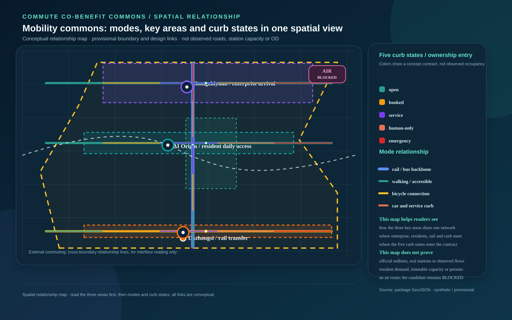
The map answers the spatial question before the model question. The three key areas, four conceptual links, external-commute interface and five curb states share one relationship view; colours describe a design contract and do not represent observed occupancy. The boundary, roads and key areas remain provisional, with no observed station capacity or flow drawn here 空间数据 空间数据 空间数据.
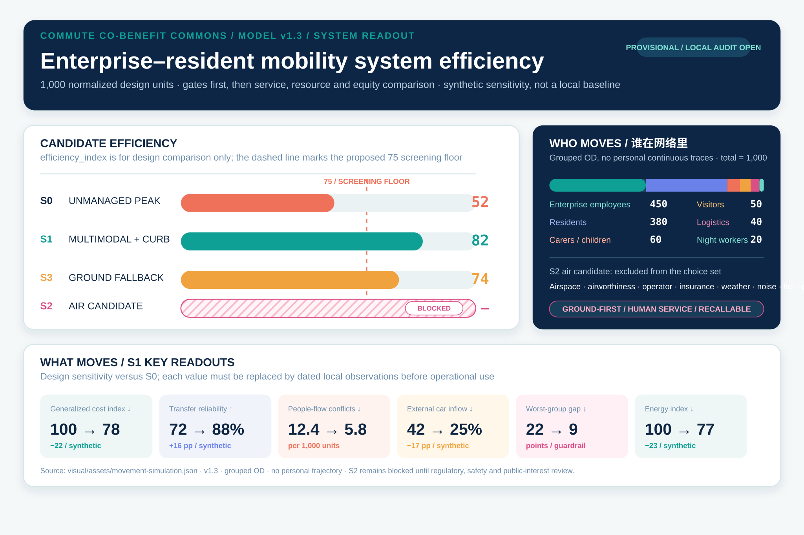

Regional-scale integrated commute simulation: process the full 3.122M morning chains
To address the objective of maximizing system efficiency and the satisfaction outcome, the package now adds visual/assets/regional-scale-commute.json and node visual/assets/run-regional-commute-simulation.js. It uses the official Beijing profile’s 3.122 million Haidian permanent residents at the end of 2024 as a population-scale coverage reference, and processes one synthetic morning chain for every agent: home/boundary → first mile → metro/bus/bicycle/walking-accessible/car/enterprise shuttle → work or service destination. The 3,122,000 figure is a population-scale stress test, not a workforce count, census microdata release or observed local OD. The enterprise, resident-worker, carer/child, visitor/service, logistics/maintenance and night-worker shares are declared scenario weights awaiting calibration 来源.
The runner actually loops through all 3,122,000 synthetic agents and retains only group, zone, mode, route-template, time-histogram, passenger-kilometre, service-unit-ledger and mass-conservation aggregates; no address, employer, identity or continuous personal trace is stored. B0 is a concentrated-arrival stress case, O1/O2/O3/O4 are public-transport, active-mobility, equity and capacity-balanced candidates, and R1 is a ground fallback screen after a metro disruption. The runner fully replays O1/O2/O3/O4 for the AM leg, applies a hard gate of peak mode load ≤1.35×, then selects lexicographically by maximum composite mobility-pressure proxy score → generalized cost → p90 time → conflicts → external-car inflow → vehicle/service-km; O3 has the highest paper score but fails its bicycle-load gate, so O4 capacity-balanced wins the declared synthetic set. O4 then runs a separate full-population PM return coverage screen with reversed aggregate routes; evening OD remains pending dated evidence. “Composite mobility-pressure proxy score” is built from time, reliability, accessibility and conflict. A resident survey result remains pending formal evidence.
Under the current synthetic inputs, the full-replay-selected O4 moves the composite mobility-pressure proxy score from 54.67 to 66.44, generalized-cost proxy from 60.34 to 49.44, p90 time proxy from 90 to 60 minutes, people-flow conflicts from 5.74 to 3.13 per 1,000, external-car inflow from 26.95% to 8.47%, passenger-kilometre proxy from 34.86M to 28.40M, vehicle/service-kilometre proxy from 9.00M to 3.51M, and peak mode load from 1.57× to 1.21×. The service_unit_ledger reports, for each mode, required and available train departures, bus departures, bicycle slots, accessible-path slots, car vehicle equivalents and enterprise shuttle vehicles; these are transparent synthetic service screens, while observed fleets, timetables and capacity remain pending dated evidence. The ranked O1/O2/O3/O4 candidates, capacity loads and gate results are emitted by the runner, so a hand-picked candidate is not presented as optimal; O3 can return only after bicycle capacity is supplied or calibrated. These values demonstrate population-scale conservation, replayability and comparison. They do not establish the same improvement in Haidian. A resident survey result remains pending formal evidence. Before a local decision, the package still requires time-binned OD, workforce composition, station/bus/curb capacity, grouped mode shares, door-to-door p50/p90, accessibility audits and fleet/headway evidence.
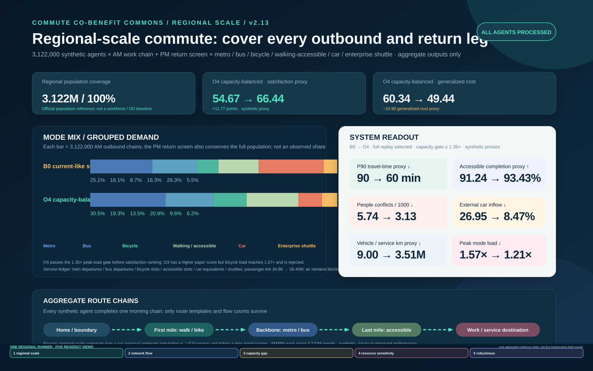
Weekly activity chain. Put weekdays and weekends on one ledger
Morning and evening peaks show only one part of a day. The ABIT weekly activity model, the MIT SimMobility activity-based multimodal framework and the POLARIS integrated agent-based transit work all support keeping activity timing, mode choice, public transport, walking and freight interactions in one auditable chain 来源 来源 来源.
This increment adds visual/assets/weekly-activity-screen.json and node visual/assets/run-weekly-activity-screen.js --check. Under the O4 capacity-balanced ground profile, the runner processes all 3,122,000 synthetic agents on each of seven synthetic days, for 21,854,000 agent-days. It publishes only aggregate day-type, group, activity, mode and vehicle-kilometre-proxy counters. Weekday active-chain units are about 2.896 million per day, while Saturday and Sunday are about 1.436 million. Carers and children retain care and school activities, logistics and maintenance retain the necessary service-vehicle boundary, and night workers retain night-work activity. Weekend mode adjustments remain a transparent sensitivity input.
Under the declared inputs, the weekly active-chain total is 17,350,438. Mode counts are metro 5,203,936, bus 3,355,032, bicycle 2,389,151, walking/accessibility 3,783,047, car 1,636,991 and enterprise shuttle 982,281. The vehicle-kilometre proxy is 19,179,099.88. These are reproducible design units. They cannot replace weekly activity diaries, grouped intercept evidence, cross-boundary OD, dated service capacity or night-service records. Weekday and weekend activity shares and mode adjustments still require dated Haidian calibration evidence 空间数据.
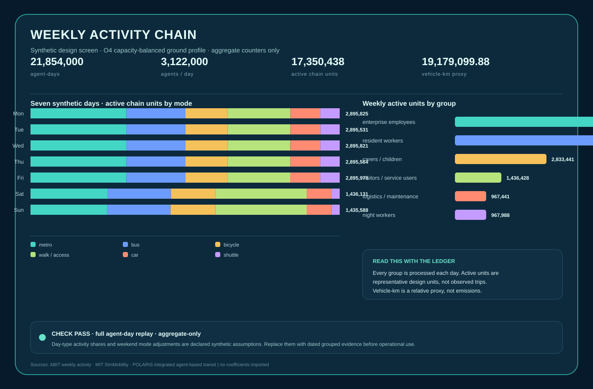
To keep group differences visible, the new group–mode–capacity board exposes the O4 proxy scores directly: resident workers 67.38, carers/children 67.24, night workers 66.35 and logistics/maintenance 57.21; grouped accessibility completion stays within the synthetic 92.87%–95.49% range. The right-hand ledger separates metro, bus, bicycle, accessible-path, car and enterprise-shuttle service pressure: 1.00× is the declared capacity line and 1.35× is the candidate gate. O4 still produces 332,639 synthetic capacity-overflow person-trips, so the board says “add service before expansion” and keeps the pressure visible. Car share falls from 26.3% in B0 to 9.6% in O4, while logistics/maintenance still retains 75.8% car share; resident commute optimization does not erase necessary service vehicles 指标 指标 指标.
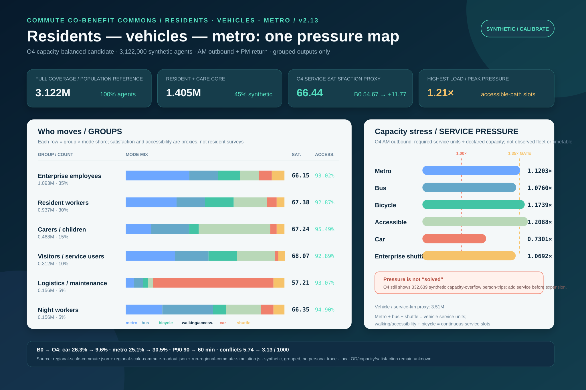
Relative resource pressure: separate passenger-km, service vehicles and unknowns
To avoid turning “less car travel” directly into an environmental-benefit claim, this increment adds visual/assets/resource-pressure-screen.json, visual/assets/resource-pressure-readout.json and node visual/assets/run-resource-pressure-screen.js. It splits the synthetic passenger-kilometre ledger by mode, then applies external method-reference intensities as a relative sensitivity screen: car is normalized to 1.00, rail and bus retain reference intensities, walking/cycling use a screen convention of zero operating intensity, and enterprise shuttle is not assigned a car or bus factor because fuel/power, fleet-kilometres, occupancy and route evidence are unknown 来源 来源.
Under the current synthetic inputs, O4 has a known-mode relative resource index of 20.07M versus 28.82M for B0, a −30.4% change; O4 has 26.58M known-mode passenger-km and another 1.82M enterprise-shuttle passenger-km excluded from the index. The vehicle/service-kilometre proxy falls from 9.00M to 3.51M, but this is not kWh, MJ, gCO₂e, fleet evidence or environmental performance. The screen does not rank O1/O2/O3/O4 and cannot override capacity, accessibility, safety, privacy or human-service gates; the next calibration must replace external factors with dated electricity/fuel, occupancy, 15-minute passenger flow and life-cycle boundaries.
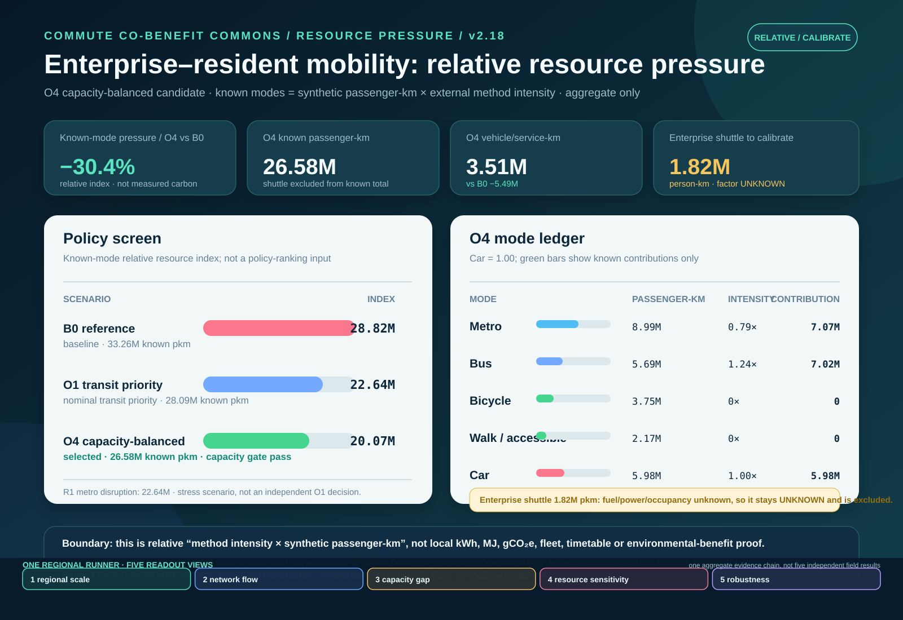
The robustness screen keeps a high nominal score separate from recovery under disruption. The new robustness_screen fully replays every O1/O2/O3/O4 candidate under four declared scenarios, nominal ground coordination, a 30-minute metro disruption, severe-weather bicycle constraint and multimodal capacity shock, for 16 × 3,122,000 synthetic agent-scenario replays, retaining aggregates only. Under the declared inputs, O2 has the highest worst-case composite mobility-pressure proxy score at 49.37, a worst peak mode load of 1.6986× and all three stress gates pass; O4 remains the nominal-efficiency winner but ranks second in the robustness screen; O3 reaches 2.0159× under the capacity shock and exits the gate. The decision rule is explicit: O4 is only the nominal screening candidate under declared inputs, while O2 is the robustness reference under stress; neither replaces field evidence or authorises implementation. This is a transparent sensitivity ranking. Until dated disruption, weather, capacity, accessibility and behavioural evidence exists, any failed gate remains a stop-and-calibrate signal 来源 来源 来源.
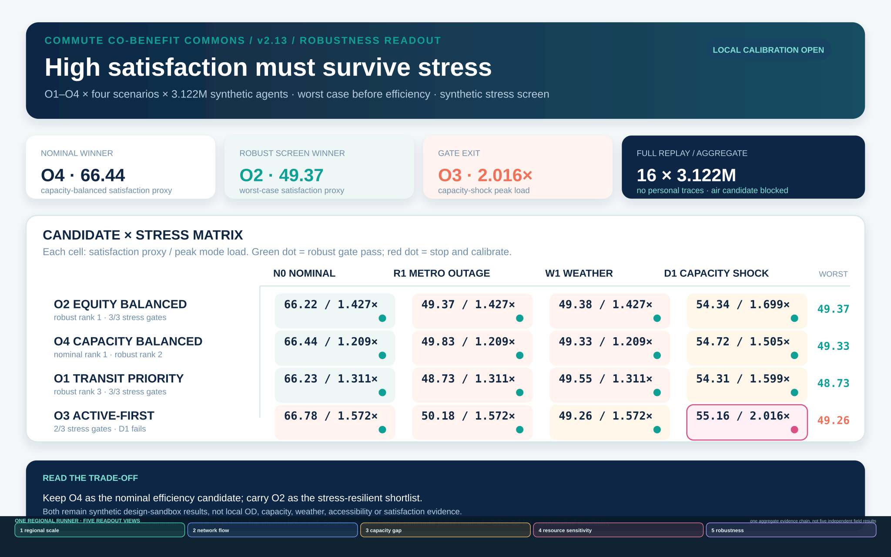
B1 Enterprise arrival sensitivity: an inspectable flex-window test
Without moving resident, care/child, visitor, logistics/maintenance or night-worker demand, B1 applies a 20% flexible-arrival sensitivity only to the 450 enterprise employee design units, moving 90 units out of the sharpest peak into a wider arrival window. The offline runner produces a synthetic readout of total peak queue 174 → 164 and mean queue person-minutes 75.7999 → 71.7917; peak car-curb queue stays at 60 and unmet demand stays at 89. The metro and bus load changes are pressure changes under the declared inputs, not an enterprise response or current Haidian performance; a real flex-window policy must also measure employee acceptance, rescheduling time cost, transit schedule compatibility and grouped mode-share change rather than optimizing queue reduction alone. Dated grouped enterprise OD, mode share, headways and station counts must replace the inputs before operational use 来源 指标.
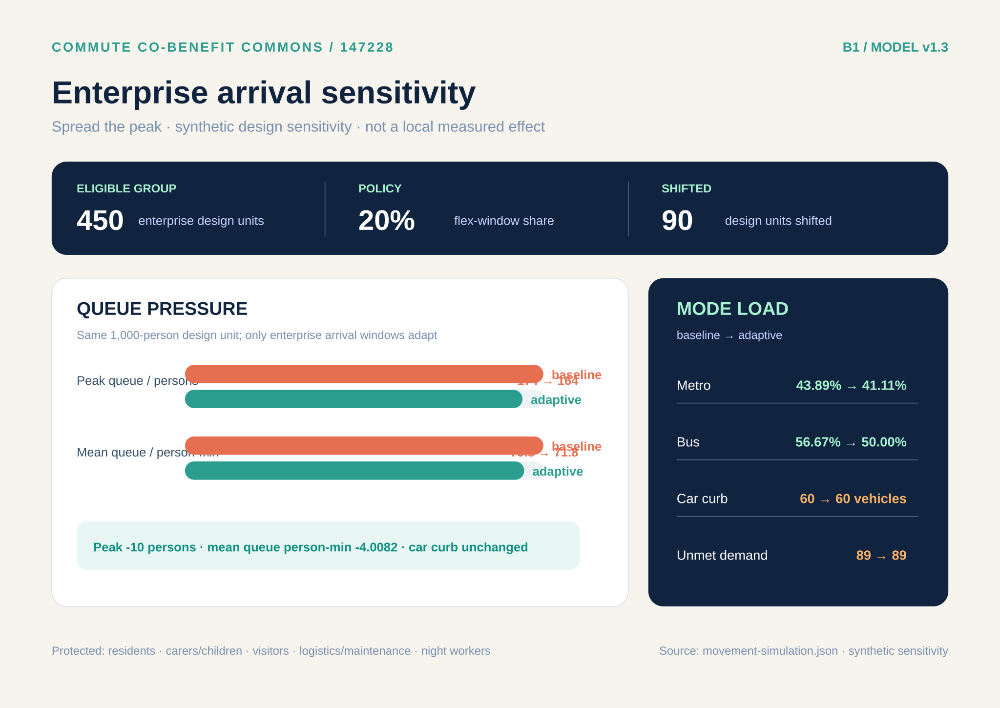
B2 Mode and departure-time choice: one ledger for external commuting and people flow
B1 asks whether enterprise arrival can be spread; B2 adds why a grouped traveller chooses a mode and time. Each alternative carries door-to-door time, arrival flexibility, waiting and transfer reliability, station crowding, curb/parking friction, fare/energy and the slowest-group gap. Fire, accessibility, public-transport, privacy and human-service gates are screened first. Enterprise employees may adjust an arrival window, while residents, carers, children, logistics and night workers keep their own activity chains and human fallback; cross-boundary commuting enters as grouped OD, never as a personal trajectory 来源 来源.
This is a calibratable behavioural contract, not a transfer of paper coefficients into Haidian. Dated mode shares, grouped departure times, headways/capacity, station and crossing counts, curb queues, door-to-door p50/p90 and accessible-route audits must be collected before local parameters are estimated. Flexible work schedules can change commute departure distributions, but flexibility, late-arrival penalties and care constraints must be validated by group rather than replaced by one average 来源 来源.
This pass makes B2 executable as a separate departure_time_choice_screen. It still processes all 3,122,000 synthetic agents, but only enterprise employees may enter a synthetic 20-minute early-flex window; residents, carers/children, visitors, logistics and maintenance, and night workers are not shifted by the model. The B0 preferred window is 95%; the O4 screen becomes 6.99% early, 88.01% preferred and 5% late, with 218,266 synthetic enterprise agents marked as adjustable, a 4.365M person-minute rescheduling-cost proxy, and zero protected-group shifts. This is not employee behaviour, an arrival distribution or timetable performance observation, and it is not used to rank O4. It makes the operating contract explicit—who may adjust, who cannot be sacrificed and how rescheduling cost is recorded—pending employee acceptance, headway and 15-minute capacity evidence 来源 来源.
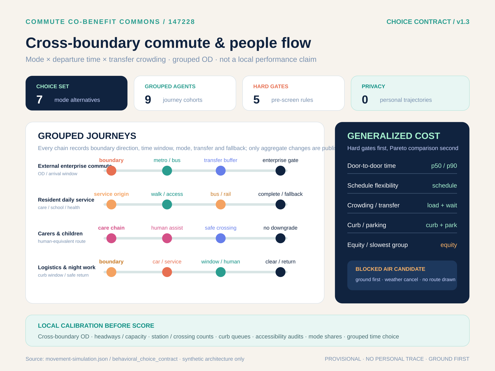
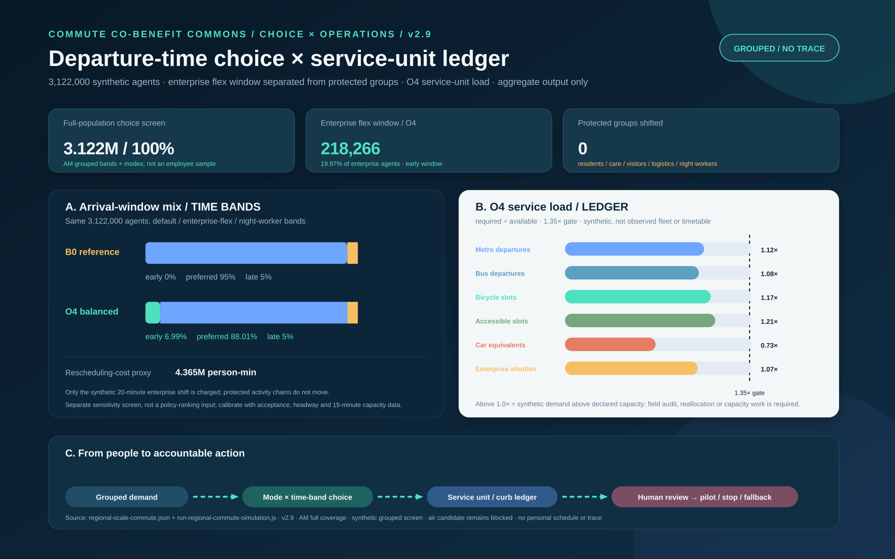
To keep a mode-level capacity screen of ≤1.35× from being misread as an operable timetable, v2.10 expands the same grouped departure demand into three 15-minute service slices. A FIFO residual-capacity rule carries queues from slice to slice and records available metro departures, bus departures, bicycle slots, continuous accessible-path slots, car equivalents and enterprise-shuttle vehicles, plus boarded trips, failed boarding attempts, residual queue and queue person-minute proxies. The independent O4 synthetic operations screen still processes 3,122,000 agents, reaches a 3.2431× peak slice load, leaves 452,668 trips in the end-of-window residual queue and produces a 16.241M queue-person-minute proxy; its operations gate is therefore not passed. This is not measured Haidian performance. It is an explicit stop signal: dated services, station/stop/curb capacity, boarding/denied-boarding counts and accessible-service capacity must be supplied before the candidate can be treated as operable. The screen does not rank O1/O2/O3/O4; the papers provide capacity-constrained schedule-based assignment boundaries, not local coefficients 来源 来源.
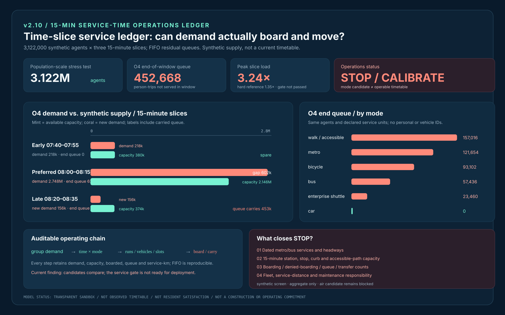
v2.11 adds an independent bounded-recourse screen on top of the time-slice ledger. When a primary mode has residual queue, only a declared share of that group’s demand may test an alternate mode with spare capacity in the same slice; the readout records source mode, target mode, time slice and person-minute cost by group. Under the synthetic O4 inputs, 68,814.9 trips take a bounded metro → car fallback: 28,354 enterprise employees and 40,460.9 visitors/service users. End-of-window residual queue falls from the v2.10 value of 452,668 to 383,853.1, with a 550,519.2 person-minute recourse-cost proxy, but the 3.2431× peak and remaining queue keep the operations gate failed closed. Walking/accessibility is never a recourse source, and group-share, capacity and mass-conservation checks pass. This is not a local route-choice, passenger-acceptance or operating-performance result, and it does not rank candidates; local use still requires denied-boarding transfer data, alternate-mode acceptance, accessible/care constraints, spare headway capacity and mode-pair time/reliability evidence 来源.
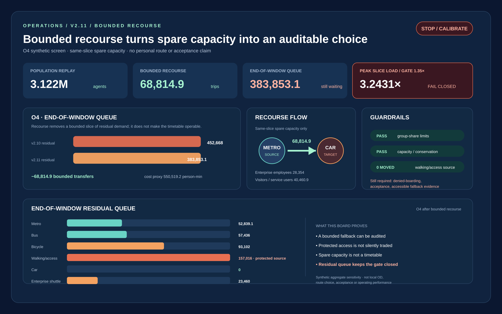
Capacity closure: calculate the gap before scaling
To turn the still-open operations gate into a concrete calibration question, this iteration adds visual/assets/capacity-closure-screen.json and node visual/assets/run-capacity-closure-screen.js. It reuses the O4 population-scale screen with 3,122,000 synthetic agents, three 15-minute FIFO service slices and the 1.35× peak-load gate, then independently sweeps the smallest declared service-unit multiplier for metro, bus, bicycle, walking/accessibility, car and enterprise shuttle in 0.01× steps. A mode passes only when its end-of-window residual queue is zero, peak load is at most 1.35×, the full synthetic population is conserved and the air candidate remains blocked 来源 来源.
Under the current synthetic inputs, the minimum multipliers are metro 1.17×, bus 1.12×, bicycle 1.32×, walking/accessibility 1.34×, car 1.00× and enterprise shuttle 1.16×. The combined screen adds 301,925 declared service units, reaches a maximum mode peak of 1.2011× and leaves zero residual queue. “Service unit” means a synthetic departure/slot/vehicle equivalent inside the model; it is not an actual timetable, fleet, purchase quantity, operating permit or resident-performance result. The screen identifies which dated OD, headway, capacity, denied-boarding, accessibility and accountable-operator evidence is still needed; it does not automatically advance P1/P2.
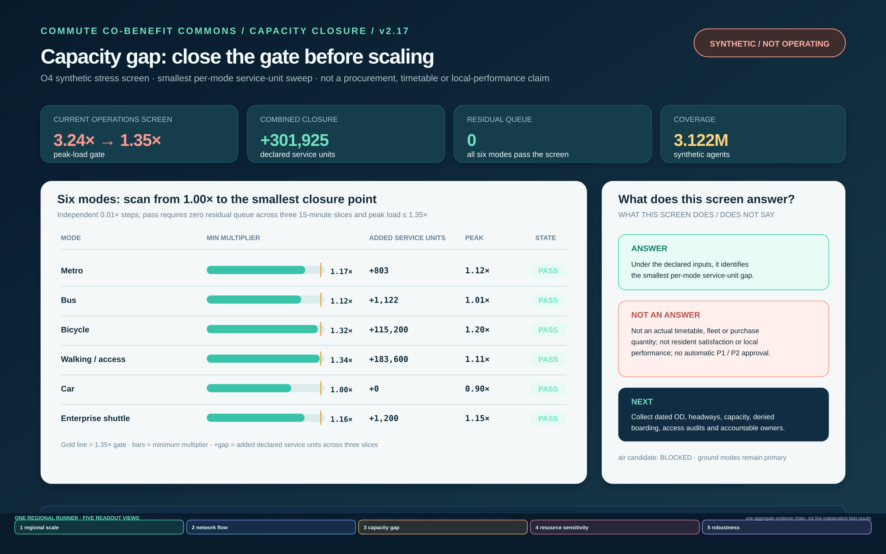
Network-level people flow: make “who passes where” auditable
The capacity-closure screen answers how many service units each mode would need; it does not yet show which spines, transfer nodes and service gates carry the people. v2.19 adds visual/assets/network-flow-screen.json, visual/assets/network-flow-readout.json and node visual/assets/run-network-flow-screen.js. It reuses the regional runner’s group ranges, origin/destination hashes, enterprise external-commute rule, O4 mode weights and enterprise flex-window rule, then expands each synthetic mode choice into a declared path and immediately reduces it into edge, node, time-slice, group, OD and vehicle/service-equivalent ledgers. The graph is an explicit analytical network, not current road or rail geometry, station capacity or a real-time traffic assignment; no personal trajectory, address, employer or vehicle identifier is retained 来源 来源.
Under the current synthetic inputs, O4 processes 3,122,000/3,122,000 agents. Mode trips are metro 952,295, bus 602,547, bicycle 422,597, walking/accessibility 652,746, car 299,361 and enterprise shuttle 192,454; 2,747,634 agents are in the preferred time slice. The declared maximum edge pressure is 1.264×, below the 1.35× network gate. The hottest edge is external gateway → metro backbone at 1.264×, followed by the logistics/maintenance gate at 1.076×; the Dazhongsi transfer node receives 1.555M people at 0.866×. As a reference, B0 concentrated arrival reaches 1.6539× on the managed-curb → destination edge and fails the network gate, making curb pressure visible instead of hiding it in a total average. These are synthetic screen outputs, not Haidian road, station, timetable or satisfaction observations; any edge/node above 1.35× remains a calibration stop, not something silently rewritten as operable.
Vehicle/service equivalents are kept separate: O4 yields 5,291 metro-train equivalents, 10,042 bus equivalents, 176,095 car equivalents and 8,019 enterprise-shuttle equivalents. Bicycle and walking/accessibility remain at zero vehicle equivalents, so active mobility is not converted into cars. The next calibration must replace declared inputs with dated 15-minute OD, metro/bus headway and station/stop capacity, road/curb/intersection counts, continuous-accessibility audits, and enterprise-shuttle fleet/operator evidence. This screen does not alter the O4 candidate ranking or advance P1/P2 来源 来源.
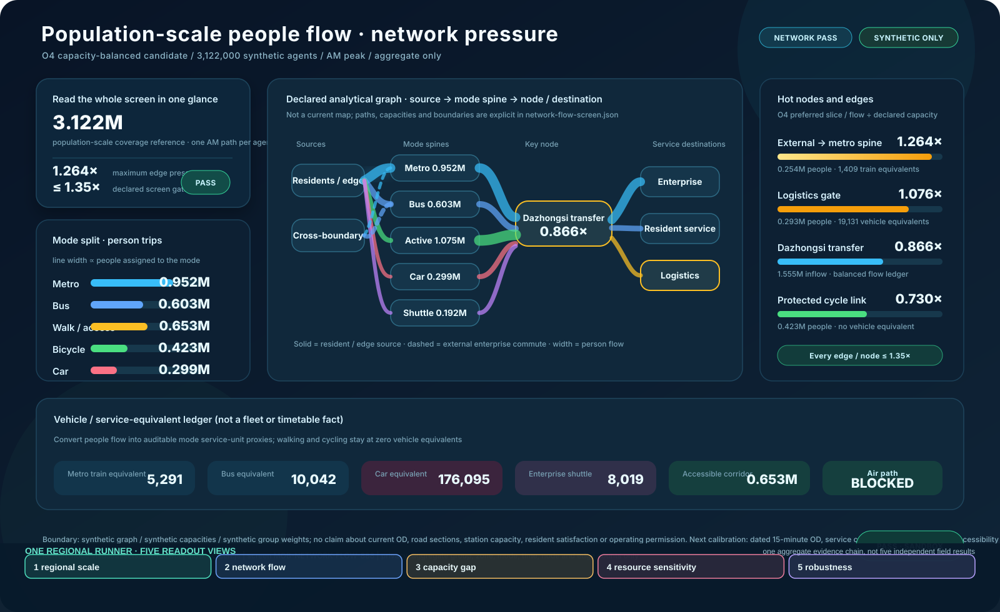
B3 Disruption, weather and the slowest group: efficiency must recover
B2 asks how grouped travellers choose in normal operation. B3 asks who can still arrive, and how fast the system recovers, when a metro segment is disrupted, severe weather suppresses cycling or the air candidate is closed. The runner replays three events on the S1 ground-first candidate: nominal operation, a 30-minute metro-segment disruption with declared bus fallback, and severe weather with bicycle fallback to bus. It reports affected-mode fallback coverage, queue person-minutes, a slowest-group gap proxy and a recovery-time proxy, while fire, accessibility, human-service and air-operation gates remain prior to optimization 来源 来源.
In the normalized design unit, the metro-disruption fallback coverage proxy is 76.92% and the severe-weather bicycle fallback proxy is 72.14%. The slowest group is the wheelchair-user group in both synthetic events, with gap proxies of 12.1998 and 13.3571 points and recovery proxies of 27.2997 and 30.0357 minutes. These are transparent stress-test outputs, not local resilience or p90 commute facts. Dated disruption logs, weather cancellations, accessible-route completion and grouped door-to-door p90 observations must replace them before operational use. If fallback coverage falls below 70%, the slowest-group gap proxy exceeds 24 points or recovery exceeds 45 minutes, the design stops for redesign; air mobility cannot fill an evidence gap 来源 来源.
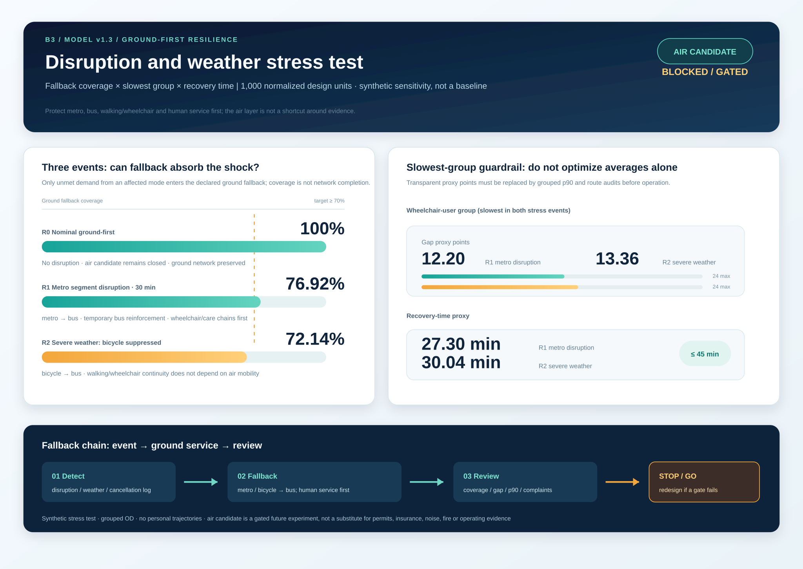
Recovery-time ledger: make TTR legible across seven groups
The existing B3 runner already computes grouped recovery-time proxies, but a single headline value hides who is slowest during disruption. This increment adds visual/assets/run-resilience-recovery-screen.js and visual/assets/resilience-recovery-readout.json: it consumes the B3 output from run-mobility-simulation.js and reorders the same values across three events and seven groups without changing demand weights, capacity or fallback fractions. In R0 nominal operation, the slowest proxy is enterprise employees at 2.8419 minutes. In R1, a 30-minute metro-segment disruption has 76.92% fallback coverage; wheelchair users are slowest at 27.2997 minutes. In R2, severe-weather bicycle-to-ground fallback covers 72.14%, with a 30.0357-minute wheelchair-user recovery proxy. Both stress events remain inside the declared 70% fallback and 45-minute TTR gates, but that only means the synthetic screen passes; it is not a Haidian incident-response, accessibility-audit, resident-experience or local p90 result.
The board puts wheelchair users, carers/children and night workers beside the other groups in one matrix. Before a pilot, replace the proxies with dated disruption logs, weather cancellations, grouped door-to-door p90 and continuous accessible-route completion. Any gate failure stops redesign; the air candidate remains BLOCKED and cannot fill a ground-evidence gap 来源 来源.
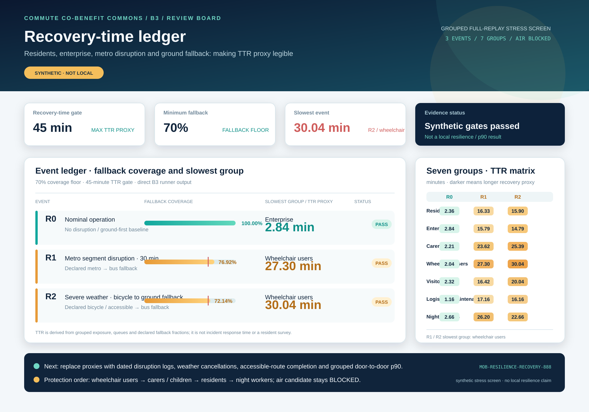
Blue-Green Network, Public Space, and Urban Character
Blue-green space provides shade, rest, rain fallback and a safer night interface. The conceptual green ratio is about 12.34% and public-space ratio about 7.33%; neither proves ecological, thermal or drainage performance 指标 指标. Public counters, transit entrances, waiting, bicycle parking and green edges should share shelter, seats, lighting, water and accessible information without blocking wheelchair turns or fire access.
The hard boundaries are: do not send people into ponding routes during storms; provide a human alternate route during heat; and reduce unnecessary equipment and lighting during dark or ecologically sensitive periods. Beijing walking/cycling and accessibility sources support continuity and maintenance requirements 标准 标准 来源.
Renewal Projects, Implementation Policy, and Phasing
P0 inventories assets, demand, curbs, accessible routes and complaints. P1 runs small reversible tests for two enterprise windows, one resident daily chain and one rail transfer chain. P2 considers conditional feeder expansion only after traffic, fire, accessibility, privacy, ecology, insurance, procurement, operator and maintenance evidence is signed. The service-tender logic of asset IDs, patrol, equipment checks, exception handling and complaint response is translated into every mobility asset 来源 深度 深度.
Responsibility-and-acceptance contract (design targets, not an implementation promise)
Each phase has four role groups signing the readback: transport and local-management authorities own approvals, right-of-way and public safety; enterprise mobility coordinators and feeder operators own aggregated demand, schedules, loading and cost; community/resident representatives, accessibility advisers and human-service staff own access rights, alternatives and redress; maintenance, data-protection and independent-review roles own asset state, privacy, incidents and evidence retention. Specific institutions, contracts and budgets remain unknown; this records responsibility boundaries rather than claiming a partnership.
Each phase retains a dated asset register, demand version, responsible role, metric readout and stop decision. P0 is accepted only when 100% of priority assets have an ID, an accountable role and a human fallback. P1 reads waiting time, route completion, curb conflicts, first response and closure status by enterprise/resident/accessibility group. P2 enters expansion review only when traffic-impact, fire, accessibility, privacy, ecology, insurance, procurement and maintenance evidence is complete, with accessible_route_completion_ratio >= 0.95, curb_time_window_compliance_ratio >= 0.90 and a complaint status update within 24 hours. Any group-level deterioration, ownerless action or failed hard gate switches service back to public transport, human, telephone and paper access, with a recorded review date; a composite model score cannot replace field evidence or approval.
The roles, fields, phase thresholds and human fallback are also recorded in visual/assets/responsibility-acceptance-contract.json. It publishes only an aggregate role × phase × group × metric acceptance structure, never personal trajectories, enterprise identities or vehicle identifiers. JSON design_target values are pre-pilot targets, not current achievements.
The implementation–operation contract is separately recorded in visual/assets/implementation-operation-contract.json, covering P0/P1/P2 roles, acceptance metrics, human fallback and stop/withdrawal conditions. It is a conceptual responsibility interface, not a confirmed institution, contract, budget, procurement, permit or operating commitment; any unknown baseline, missing consent/responsibility boundary or failed hard gate keeps the package in investigation or human-fallback status 空间数据 深度.
To turn “human fallback” into a reviewable minimum action, this iteration narrows the existing M-09 storm/network-outage degradation card into an offline tabletop rather than claiming a new operated scenario. visual/assets/mobility-tabletop-contract.json fixes four synthetic service requests, four trigger events, six acceptance checks and five reversible rollback steps; node visual/assets/run-mobility-tabletop.js --check reads only bundled fixtures, makes no network calls, touches no personal data or external system, creates no persistent state, and emits an aggregate readback isomorphic to mobility-tabletop-evidence.json. The current rehearsal keeps a human or public-transport entry for 4/4 requests, freezes reservations, passes 6/6 checks and replays 5/5 rollback steps; performance_results=null and operational_status=not_authorized_not_run, so PASS proves only that state, stop and rollback logic is inspectable. It cannot advance P1/P2 and does not prove staffing, accessibility performance, public acceptance, service availability or safety 空间数据 空间数据 空间数据.
One question kept recurring in public feedback was who confirms the baseline and what makes a start permissible. This revision does not add another generic metric list. It turns the four M-09 synthetic requests into four readiness cards. Before authorisation, each card must name its observation unit, sample and time window; freeze success and stop conditions; name an operating role and an independent stop reviewer; and retain an equivalent human route, retention/deletion rule, redress entry and review cycle. The local baseline, observed value, authorised organisation and deletion receipt remain unknown or not_available_before_authorization on all four cards; three deliberate missing-field fixtures are rejected. A PASS from run-mobility-pilot-readiness.js --check proves only that this field chain is closed. It is not field readiness or P1 eligibility evidence 空间数据 空间数据 空间数据.
This revision makes three easy-to-overread boundaries explicit on every card. The sample contract names excluded groups, route segments, time windows and unconsented individual traces, and requires excluded categories to be recorded; absence from the sample is not evidence of no need. The deletion section defines a declarative receipt schema with scope, time, executor role, independent verifier role and lookup location; no real deletion receipt exists, and a passing field contract does not prove that deletion occurred. The appeal section adds a receipt ID, received time, response owner, status, next review time and lookup location; the response window must be frozen before authorization and remains unknown today.
| Request | Register first | Success and stop rule | Redress for an ordinary person |
|---|---|---|---|
Resident daily care M09-R01 | Grouped service type, time window, care and accessibility category | Keep human/phone/paper/public-transport access; stop if fallback or exit is unavailable | Community desk, telephone or paper entry |
Wheelchair-accessible route M09-R02 | Route segment, handover point, weather state and dated walkthrough | Replay continuity and human assistance; stop if the route breaks or an undated walkthrough is presented as a result | Human route desk, telephone or paper entry |
Enterprise shuttle window M09-R03 | Grouped demand, vehicle class, curb asset and loading window | Discuss a window only with an owner, fire clearance and accessible route; no booking when one is missing | On-site human, telephone or paper entry |
Rail last-mile transfer M09-R04 | Station exit, arrival window, mode and accessibility grouping | Keep staffed wayfinding and ordinary public transport; stop when ownership or dated observation is absent | Station desk, telephone or paper entry |
These four cards cross-reference the ten-card startup checklist, the M-09 tabletop and the P0/P1/P2 responsibility contract. They turn “collect the baseline later” into fields that cannot be silently bypassed, without promoting one package’s naming into a repository-wide hard gate. If maintainers publish a canonical, versioned pilot-readiness contract, this package will migrate through a field mapping and inventory-impact note.
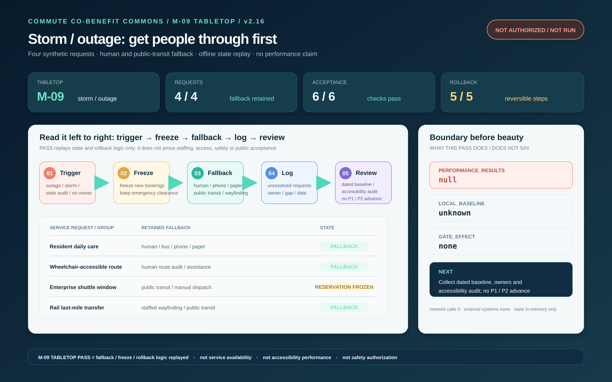
The implementation loop is register → pilot → review → expand or stop. Operators sign a reversible service agreement; residents keep public paths and human service. An AI recommendation may always be rejected by an on-site person.
Metrics, Area Recalculation, and Compliance Matrix
Current readable baseline
The package separates file-readable geometry, unknown local baselines and pilot targets. Known values include the provisional area, three key areas, building footprint, green/public ratios and design relationship lengths 指标 指标 指标 指标 指标 指标 指标. Unknown values include enterprise commute demand, external commute OD, resident access, employer multimodal trip rate, parking occupancy, curb compliance, transfer reliability, accessible-route completion, people-flow conflicts, complaint closure, workplace charging gap, multimodal system efficiency, mode-transfer reliability and air-ground transfer reliability.
This schema fix puts all 29 records under the single metrics object and makes status, value, unit, source_files, formula and confidence one auditable record contract. The offline result is 11 known and 18 unknown records, no stray top-level metric keys and no status/value contradictions; the summary is 空间数据 and the checker is 空间数据. This proves schema and known/unknown consistency only; it does not prove field mobility performance, operational outcomes or an official score.
Traffic metrics still needed
Pilot targets are not current outcomes: accessible-route completion at least 0.95, transfer reliability at least 0.85, curb-window compliance at least 0.90, a first complaint response within four hours and a status update within 24 hours 指标 指标 指标 指标.
Five gates and matrices
Five gates cover authoritative geometry, consented demand, safety, responsibility and equity. The compliance, standards and design-depth matrices bind these claims to the proposal, GeoJSON, drawings and self-check 标准 标准 标准 标准 深度 深度 深度.

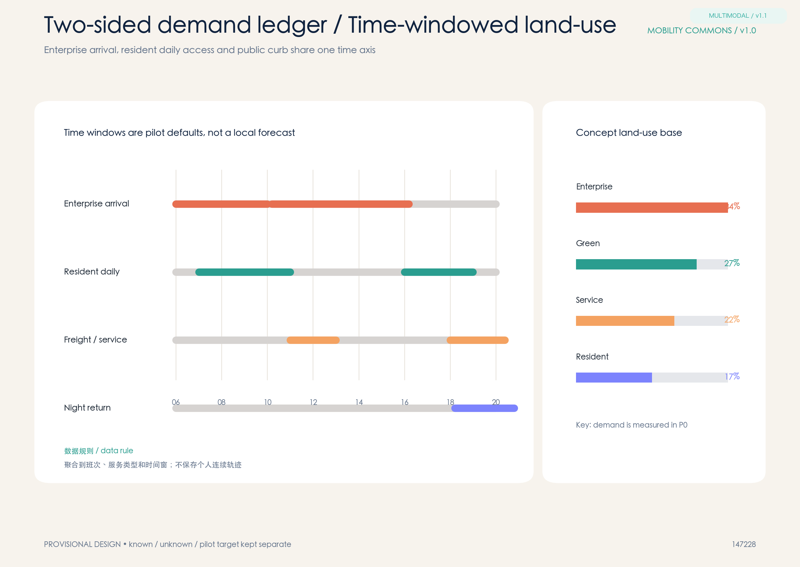

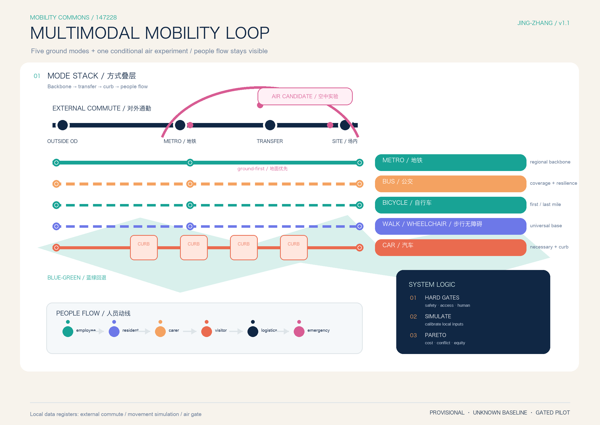
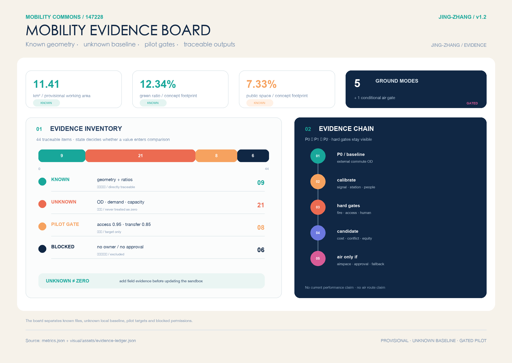
Risk, Copyright, and Compliance
This package does not replace right-of-way confirmation, traffic-impact assessment, parking contracts, fire review, accessibility review, construction drawings, operating permits, data compliance, insurance or procurement. The main risks are enterprise demand displacing resident access, unmanaged on-demand vehicles adding traffic, unmaintained curb states, unowned complaints and digital exclusion. Each has a rollback: human service, public transport, paper/telephone access, removable equipment, paused reservations, public aggregate incident summaries and a next review date 来源 来源 深度.
Government and tender sources establish policy and responsibility frameworks; papers establish methods and cautions; OSM and provisional geometry only support background screening and design relationships. No source is used to claim a local capacity, enterprise partnership, station performance, accident rate, satisfaction improvement or health outcome.
References
The source register records access date, use and non-use boundaries for the official transport plan, Haidian tender and planning evidence, employer TDM research, curb-management research, shared-mobility research, multimodal simulation documentation, air-mobility methods and the public site package 来源 来源.
Additional method and policy entries are BEIJING-LOW-AIR-ECONOMY-2024, CAAC-UAV-REGULATION-2024, SUMO-MULTIMODAL-DOCS, MULTIMODAL-TRAFFIC-REALITY-2025, UAM-BEIJING-MULTIMODAL-2024 and UAM-PUBLIC-TRANSIT-2023; they are not local baselines or permissions.
The choice-contract references are JOINT-MODE-TIME-CROWDING-2020, DTUE-PT-2025, FLEXTIME-DEPARTURE-CHOICE-2013 and UAM-TOD-VERTIPORT-2026; they define calibration questions and safety boundaries, not imported coefficients, capacity or a local air route.
The population-scale method references are MATSIM-LARGE-SCALE-ABM, MATSIM-BOOK-ACTIVITY-BASED, ACTIVITY-BASED-DISAGGREGATE-2001, ACCEQ-DRT-2023, SCHEDULED-CAPACITY-TRANSIT-2012, DYNAMIC-PT-CAPACITY-2024 and SIMMOBILITY-MULTISCALE-2017; they motivate activity chains, full-population replay, capacity feedback, time-slice boarding checks and future equity-oriented feeder candidates, but do not supply Haidian coefficients or outcomes.
Boundary statement: this is an auditable concept and reversible pilot framework for enterprise–resident mobility. It is not an approved plan, road-opening announcement, parking permit, enterprise agreement, capacity proof, health claim or construction commitment. The existing first-place project remains untouched.